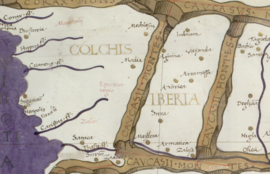

საქართველოს ტერიტორიაზე უძველესი დროიდან ადამიანთა ცხოვრების ფაქტს ადასტურებს დმანისში ჩატარებული არქეოლოგიური გათხრები. დმანისში აღმოჩენილი ადამიანის ჩონჩხის ფრაგმენტები უძველესია მთელს ევრაზიაში, რომლის ასაკი 1 800 000 წელია. ქართველების პირველი პოლიტიკური გაერთიანება დიაოხი და კოლხა მდინარე ჭოროხის აუზში ძვ. წ. VI საუკუნეში ჩამოყალიბდა ეგრისის ანუ კოლხეთის სამეფო.
 ძვ. წ. IV საუკუნეში აღმოსავლეთ საქართველოში შეიქმნა იბერიის სამეფო. სწორედ იბერიის მეფეს ფარნავაზს უკავშირდება ქართული დამწერლობის შექმნა. დასავლეთ საქართველოს ტერიტორიაზე ოთხი სამთავრო ჩამოყალიბდა: ლაზების, აფშილების, აბაზგებისა და სანიგების. განსაკუთრებით გაძლიერდა ლაზთა სამთავრო, რომელმაც თავის გავლენას დაუქვემდებარა დანარჩენი სამი და შეიქმნა ახალი სახელმწიფო - ლაზიკა. დასავლეთ საქართველოში შეიქმნა აფხაზთა სამეფო. IX საუკუნის დამდეგს სამხრეთ-დასავლეთ საქართველოში
შეიქმნა ტაო-კლარჯეთის სამთავრო, რომელსაც უკვე 888 წლიდან ქართველთა სამეფო ეწოდა.
დასავლეთ საქართველოში შეიქმნა აფხაზთა სამეფო. IX საუკუნის დამდეგს სამხრეთ-დასავლეთ საქართველოში
შეიქმნა ტაო-კლარჯეთის სამთავრო, რომელსაც უკვე 888 წლიდან ქართველთა სამეფო ეწოდა.